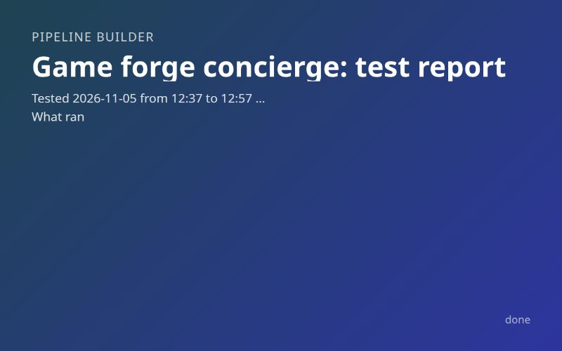

Inputs
- Test budget in minutes
- 45
- What do you want from this pipeline?
- can you build a pipeline that knows enough game development and user experience and the Game forge pipeline to have a really full interative conversation with the user about what they might want, producing static sites for samples and diagrams that are linked for the user to look at to better communicate and ground their responses. By the end there should be a debriefing document that captures samples and descriptions using collegial tone and flowing prose that fuctions as a bible a future Game forge run can utilize
Starred outputs
Test the pipeline · test-reportmd
What ran and how long, what worked, each defect with its evidence, each fix marked confirmed or unconfirmed, what to look at next
Game forge concierge: test report
Tested 2026-11-05 from 12:37 to 12:57 CST, about 20 of the 45 budgeted minutes. Pipeline baab9c04-607b-4039-b75c-ab526275f90e now stands at v3. The test copy 2d4d0f40-dda2-4e14-b5c2-6c04004bb11c ("Game forge concierge (test)") had its loop cap cut to two rounds. The copy is deleted, and its runs stay in history.
What ran
The pipeline has no start inputs; the conversation opens blank. The test inputs were therefore the answers, which the tester typed as two different users.
| Run | Variable | The user played | Rounds | Ending | Wall clock |
|---|---|---|---|---|---|
happy 6ff46294-7e16-4648-88fc-c85825780091 |
samples-per-round 3 | Ordinary arcade taste: "Tense and twitchy", tiny-arena dodger, near miss. Reacted to every sample, tuned graze radius to 22 px, asked for one more sketch and a HUD mock. | 2, loop cap reached without done.md | Confirm yes, launch started Game forge run 789bd5e0-1e3b-4065-9b5a-87f995ee3be1, which the tester cancelled at once |
14 min 51 s |
stress b9fe8916-8548-46f9-80ff-6ec20ab655f9 |
samples-per-round 5 | Free text in Other asking for online co-op, saves and a 20-hour campaign. Then same-keyboard two-player plus phone play. Quit in the middle of round 2. | 2, critic wrote done.md on userDone | Confirm "Not yet", park wrote the copy-ready command | 13 min 4 s |
Round timing, from stage timestamps:
- Happy round 1, three sketches: about 6 min 50 s from the last answer to the first round-2 question. The sketch stage ran about 6 min of that.
- Stress round 1, three sketches, one mock and one diagram: about 8 min 20 s. The mock took 55 s and the diagram 35 s; the sketches set the pace.
- Happy round 2, one sketch and one mock: sketches 119 s, mocks 52 s, critic 40 s.
- After the loop: bible 49 to 57 s, confirm 29 to 35 s, launch and park under a second.
What worked
Each line below is backed by a file or a transcript count, not by a stage summary.
- One question per AskUserQuestion call. The happy conversation made 12 calls and the stress conversation 5. No assistant message held more than one call, so the lesson-14 server crash did not occur.
- The interview craft. Questions were contrasts with grounded options, asked about games the user had played, and offered "write the bible now" at every round close. Round 1 picked three directions that differ on MDA aesthetic: graze surge (sensation), gap reader (challenge) and matador dash (fantasy).
- Wish handling. The stress conversation answered the online co-op ask with "Game forge can't do co-op, saves, or a 20-hour campaign", then offered four buildable versions. The bible records all four wishes under its own section.
- Builder conditions. The happy round 1 skipped mocks and diagrams, and round 2 ran mocks cleanly when a mock was requested. Stress round 2 skipped all three builders on an empty requests list.
- Samples. Every folder has index.html, and every link in both bibles resolves on disk. The file route returns 200 for index.html and sketch.js. The sketch stage ran Playwright, saved title, play and over screenshots, and read 6 PNGs in round 1. The tester read
stages/sketches/work/shot-r2-blended-run-t100.pngandstages/mocks/work/shot.pngfrom the happy run. Both show the requested neon palette, HUD, tuning readouts and arrival markers. - The critic. gaps.md named concrete, ordered gaps with a closing question each, such as "no rank letters, thresholds or multiplier cap" after the blended sketch scored 94000. done.md appeared only in the stress run, for the userDone case.
- The bible. Both bibles keep the fixed section order. The happy bible keeps all ten decisions, D1 to D10, and the stress bible keeps D1 to D3. The tuned 22 px value appears six times. The prose is collegial and cites decisions inline.
- Handoff. launch.handoff.md holds the Game forge run id with watch and run commands. park.handoff.md holds the user's reason and a correctly shell-quoted start command.
- Self-reporting. The stress run's stages added two rows about the hidden links to
lessons__game_forge_conciergeon their own.
Defects
- Sample links missing from the round-2 question (stress run). Fix confirmed: no; the fix is unconfirmed.
- Evidence:
/home/alex/.modpipes/runs/b9fe8916-8548-46f9-80ff-6ec20ab655f9/stages/conversation/outputs/decisions.mdQ5 records "The user picked from the descriptions in the question and did not open the sketches." The conversation transcript beside that file holds no link before the Q5 call. Every D3 value is therefore untuned sketch defaults. - The happy run put the full link in every reaction question, so the behaviour varies between sessions. The prompt line "Later rounds open with the links" leaves the place of the links open.
- Fix in v2: the conversation prompt now says the user sees only the question dialog, so each sample's full link goes inside the question text.
- Evidence:
- Notes leaking into forge-values.json (both runs). Fix confirmed: no; the fix is unconfirmed.
- Evidence:
/home/alex/.modpipes/runs/6ff46294-7e16-4648-88fc-c85825780091/stages/bible/outputs/forge-values.jsonhas ship-score "Game forge default. 80. Not discussed." and audience "Game forge default. General. Not discussed." The launch passed both verbatim; seestages/launch/outputs/handoff.mdin the same run. Game forge's critic reads "ship is true only when total is at least {{ship-score}}", so a sentence lands where a number belongs. The stress run's style also carried "(From the mock; the user did not confirm it.)". - Fix in v2 and v3: the bible prompt keeps notes such as default, not discussed and unconfirmed in the bible only. The prompt also makes ship-score digits only.
- Evidence:
- npm i playwright failed with ETARGET (happy sketches, round 1). Fix confirmed: no; the fix is unconfirmed.
- Evidence: the Bash results in
/home/alex/.modpipes/runs/6ff46294-7e16-4648-88fc-c85825780091/stages/sketches/transcript.jsonlshow "No matching version found for playwright-core@1.65.0". The stage spent three more commands before installing playwright@1.57.0, which is part of the six-minute round. - Fix in v3: the shared prompt says to install the release before the newest by exact version when npm reports No matching version.
- Evidence: the Bash results in
Lessons went to the real pipeline's tables: one each for the bible and sketches stages. The links lesson already sat in lessons__game_forge_concierge from the runs themselves. One open todo is row 4 in lessons__pipeline_builder_todos.
What the next tester should look at first
- Confirm v3 with one fresh run, using row 4 of
lessons__pipeline_builder_todosas the script. Check every round-2 reaction question for a full link. Answer no at the confirm, then read forge-values.json for a digits-only ship-score. - Time round 1 against the default of four samples. Three sketches already took close to seven minutes, which is past the five-minute mark in the built note. A default of 3 is the likely change.
- Decide whether two players on one keyboard counts as multiplayer. The shared prompt lumps every kind of multiplayer as beyond Game forge. The stress conversation called same-keyboard co-op "a stretch" and still made it the core of the concept. Game forge's play-tester has never seen a two-player game.
- The happy conversation offered "Other value" beside the automatic Other once. The duplicate is cosmetic and was left alone.
- The Mermaid CDN path in the diagrams stage is still unseen. The one diagram built was hand-written SVG.
Questions and answers
-
Confirm with the user asked · answered ·
What kind of samples should the conversation build and link for you to look at? The in-app viewer blocks scripts, so anything playable opens as a link in a new tab.
Mocks plus playable sketches (Recommended)
-
Confirm with the user asked · answered ·
Who decides the conversation is finished? Each round is a few questions, a batch of samples, and a look at the links. Game forge needs concept, scope, controls, audience, and style settled, plus the brief-level detail that makes the bible worth having.
You end it, with a critic nudging (Recommended)
-
Confirm with the user asked · answered ·
Where does the conversation begin? Game forge today runs from a plain-language concept, but this pipeline is meant to find the concept with you.
Always blank
-
Confirm with the user asked · answered ·
What should happen with the bible at the end? Game forge takes concept, scope, controls, audience, and style as variables, and modpipes can start a run from an earlier run's markdown with --from.
Start Game forge from the pipeline
-
Confirm with the user asked · answered ·
How should samples be built between your answers? This sets how long you wait each round and how good the samples are.
Builders between rounds (Recommended)
-
Confirm with the user asked · answered ·
Here is the picture I will hand to the researchers and planner. Is this right? Game forge concierge: a pipeline that holds a real conversation with you about a game you might want, grounds every round in things to look at, and ends in a bible Game forge builds from. - Opens blank. Round 1 asks what you are in the mood to make and shows contrasting sketches to react to. - Each round: the conversation (opus, one session resumed across rounds) asks one question at a time, then writes sample requests. Builder stages make static mocks (palettes, HUD layouts, screens, mood boards), playable canvas sketches, and diagrams (core loop, state machine, difficulty curve) in parallel. A sufficiency critic reads the growing bible and names the gaps to ask next. Next round opens with the links. - You can say done at any point. Hard cap 8 rounds. - Researchers load game design, UX, game feel, and Game forge's own conventions (static folder, asset-plan contract, window.__game, 2 to 5 minute arcade scope) so the conversation knows when a wish exceeds what Game forge builds today, and records it as such. - The bible: flowing collegial prose, samples embedded by link with descriptions, decisions and open edges, and a final section with the exact Game forge values for concept, scope, controls, audience, and style. - After the bible, one confirm, then the pipeline starts a Game forge run itself with those values.
Yes, write it up
Other outputs
- Confirm with the user · hammered-out-understanding.md 8.3KB
- Confirm with the user · scope.md 378B
- Research the topic · topic.md 9.7KB
- Research front-end approaches · frontend.md 9.5KB
- Research back-end approaches · backend.md (absent)
- Research the stack · stack.md 7.9KB
- Research modpipes · modpipes.md 12KB
- Plan and build the pipeline · pipeline-plan.md 6.0KB
- Plan and build the pipeline · built-pipeline.md 3.9KB
- Test the pipeline · pipeline-versions.dir 4.1KB
- Analyse the test · lessons-learned-site.html 16KB
- Analyse the test · cli-tools-optional.md 9.0KB
| Stage | Group | Status | Model | Duration | Tokens |
|---|---|---|---|---|---|
| Confirm with the user | kwwtgqp | done | fable | 12 min 31 s | 717K |
| Research the topic | research | done | default | 1 min 40 s | 301K |
| Research front-end approaches | research | done | default | 2 min 09 s | 468K |
| Research back-end approaches | research | skipped | default | 0 s | 0 |
| Research the stack | research | done | default | 1 min 36 s | 505K |
| Research modpipes | research | done | default | 2 min 17 s | 1.1M |
| Plan and build the pipeline | plan | done | fable | 8 min 03 s | 1.4M |
| Test the pipeline | kz3ofpv | done | default | 18 min 02 s | 4.4M |
| Analyse the test | kwn1sne | done | default | 6 min 03 s | 2.6M |